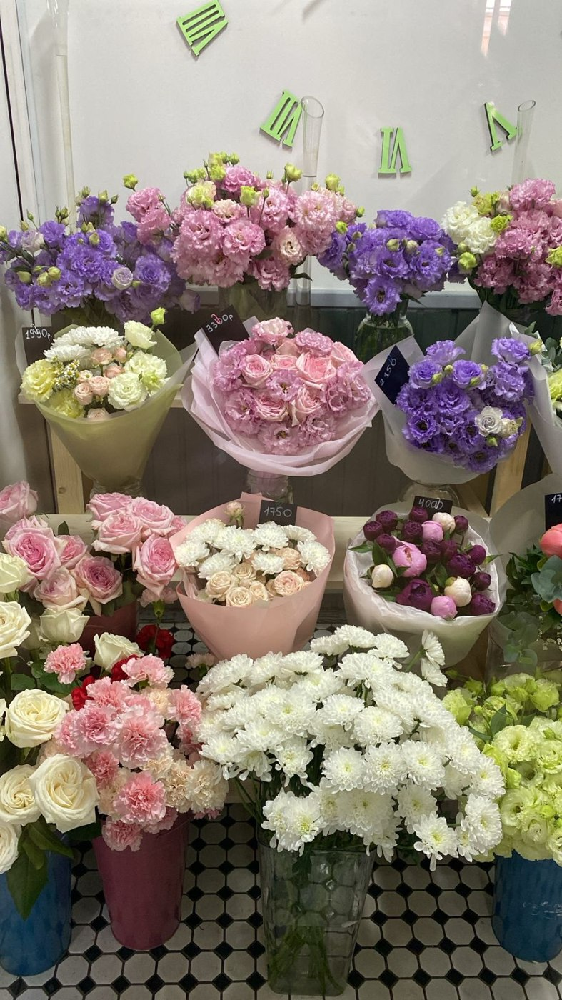
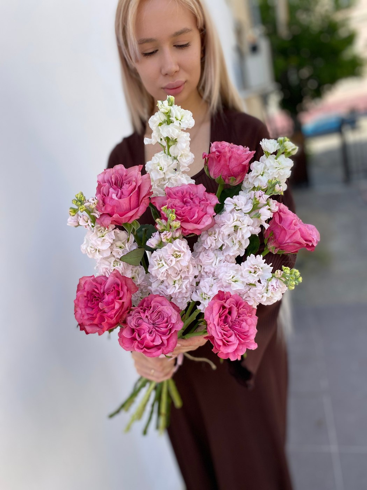

Выбор цветов
Обсудите повод, состав и бюджет по телефону.
Стоимость уточняйтеРозово-зелино · Астрахань
Цветочный магазин на Шаумяна, 62. Букеты, работы и атмосфера цветочного пространства.
Астрахань, ул. Шаумяна, 62
Ежедневно, 08:00–20:00

Работа из фотогалереи магазинаВыберите своё настроение
Подберём вариант под повод и бюджет. Свяжитесь с магазином, чтобы узнать актуальное предложение.
Опишите повод, любимые цветы и комфортный бюджет. Доступные варианты и итоговую стоимость магазин подскажет перед заказом.
Публичный прайс в карточке магазина не опубликован. Уточните цены и наличие по телефону.
Узнать стоимость ↗Цена относится только к указанному товару и его описанию. Если количество не указано, уточните единицу продажи у магазина. Сведения проверены 13.11.2026. Цены и ассортимент могут измениться. Прайс на Яндекс Картах ↗
Больше, чем цветы
Выберите, что нужно для вашего случая. Детали заказа и стоимость согласуйте с магазином.
Обсудите повод, состав и бюджет по телефону.
Стоимость уточняйте
Будем знакомы
Цветочный магазин на Шаумяна, 62. Букеты, работы и атмосфера цветочного пространства.
Расскажите, кого хотите порадовать, какие оттенки вам нравятся и какой бюджет вы планируете. Состав, упаковку и время получения обсудите с сотрудниками.
Поближе к красоте
Загляните в магазин и найдите настроение для следующего заказа.
Фотографии из карточки магазина на Яндекс Картах. Это примеры работ и атмосферы; текущее наличие уточняйте.
Опыт покупателей
4,8 из 5 · 23 оценок на Яндекс Картах.
Выбранные отзывы с оценками 4 и 5 звёзд. Цитаты из оригиналов; полный текст — по ссылке.
«Беру здесь букеты для жены регулярно – всегда свежие, красивые и стоят нормально. Доставка приезжает вовремя, упаковка аккуратная. Если нужно что-то особенное помогают выбрать без…»
«Осталась в полном восторге от работы вашего магазина! Помогли подобрать идеальный букет для мамы, учли все пожелания и даже добавили милую открытку. Доставили аккуратно и…»
«Осталась в восторге от цветочного салона! Широкий ассортимент, свежие и красивые цветы. Персонал помог подобрать идеальный букет, уточняя все детали. Обязательно буду обращаться сюда еще!!!🌸💐»
Перед заказом
Позвоните по указанному номеру и обсудите с магазином состав, бюджет и время получения. Заказ считается согласованным после подтверждения сотрудником.
Фотографии показывают примеры из карточки магазина. Сезонность и наличие могут влиять на состав. Попросите подтвердить цветы и упаковку перед заказом.
Цены взяты из опубликованного прайса на дату проверки. Итог зависит от выбранного состава, размера, упаковки и доставки. Подтвердите стоимость у магазина до оплаты.
Астрахань, ул. Шаумяна, 62. Используйте кнопку «Построить маршрут» ниже. Режим работы: Ежедневно, 08:00–20:00.
До встречи
Астрахань, ул. Шаумяна, 62
Ежедневно, 08:00–20:00